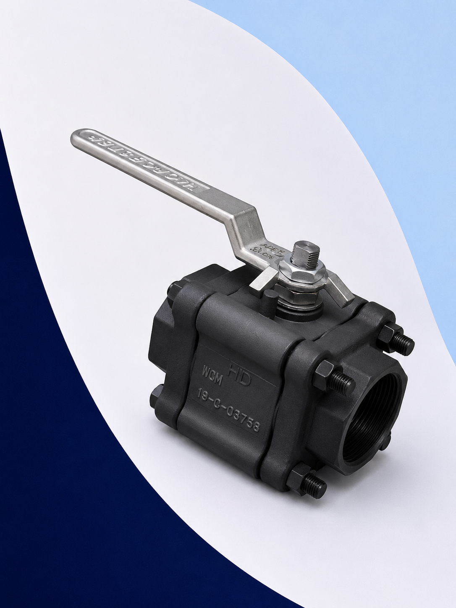
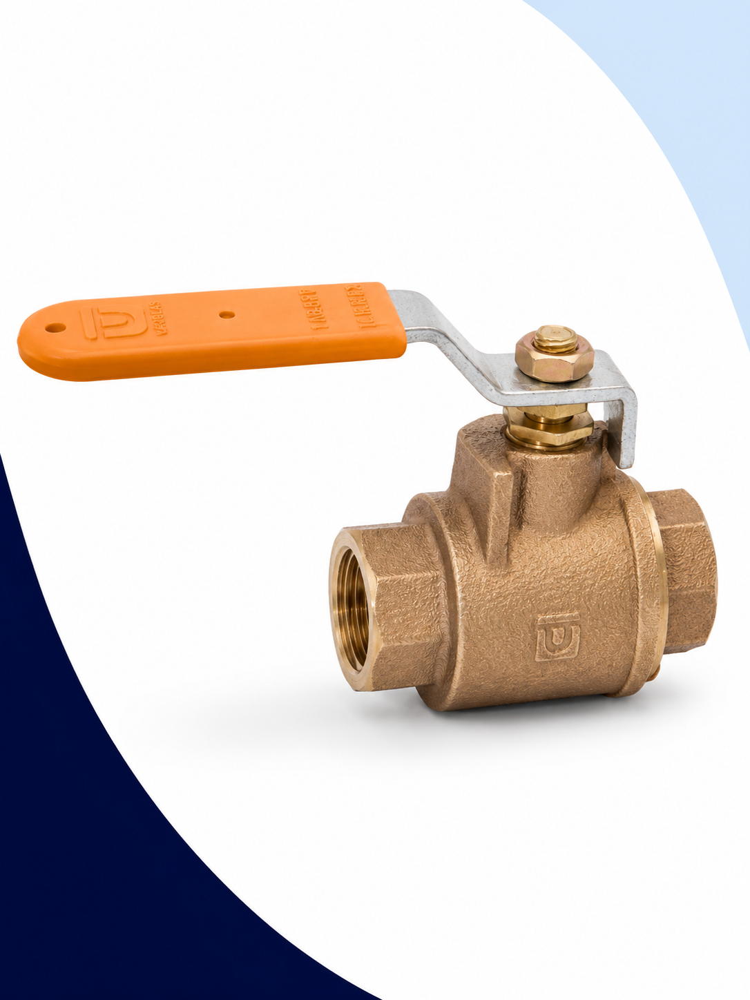
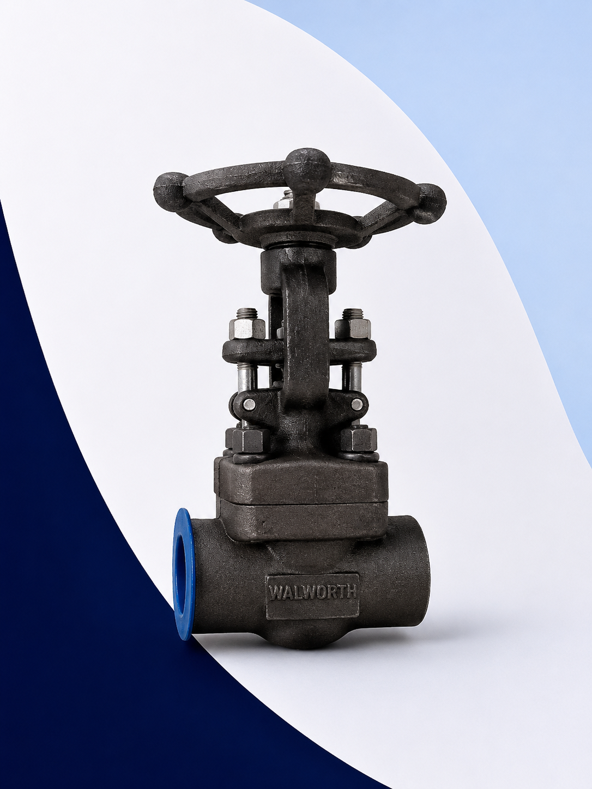
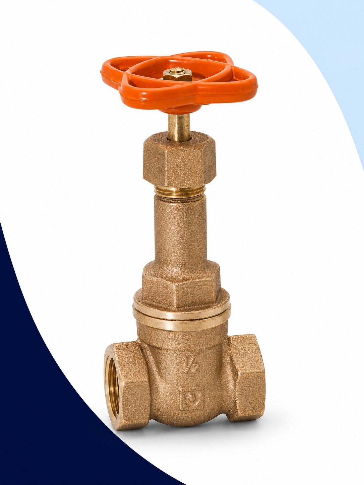
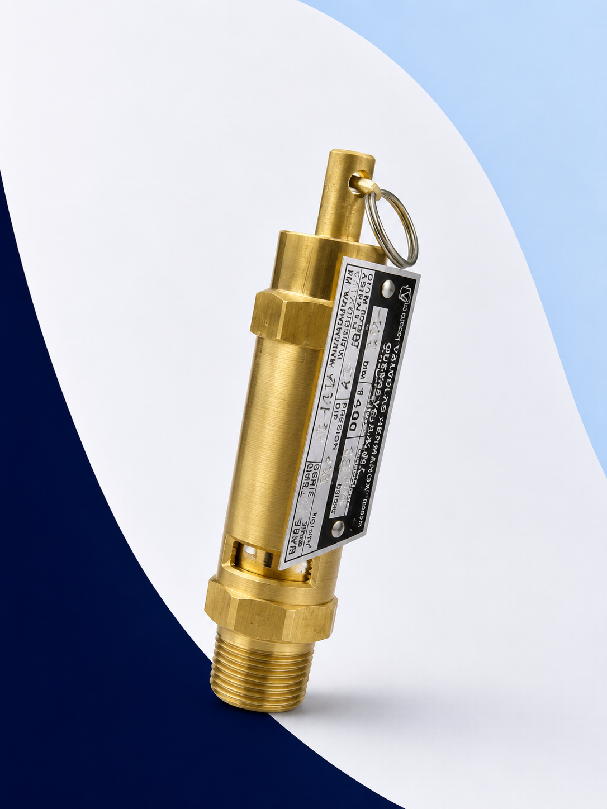
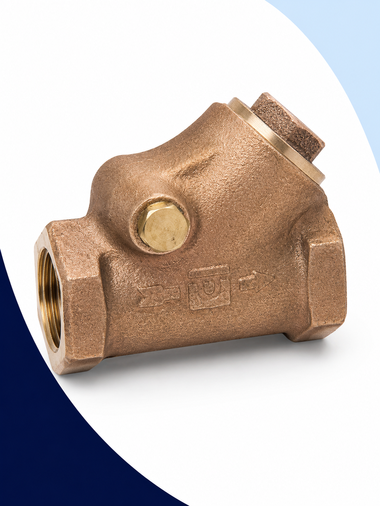
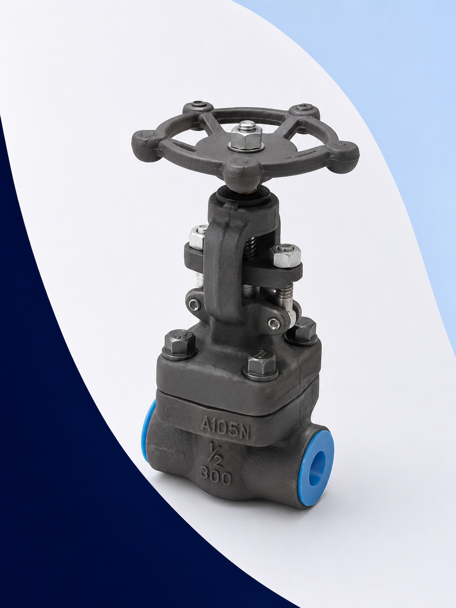

Válvulas Industriales para Vapor, Agua, Aire, Gas y Fluidos de Proceso
Suministramos válvulas industriales para aislamiento, regulación, control y protección de sistemas de vapor, agua, aire comprimido, aceites térmicos y procesos industriales. Trabajamos con marcas reconocidas como Worcester, Walworth, Urrea y otras alternativas para cada aplicación.
¿Qué es una válvula industrial?
Una válvula industrial es un dispositivo mecánico que regula, dirige o controla el flujo de fluidos — líquidos, gases o mezclas — dentro de un sistema de tuberías. Dependiendo de su tipo y diseño, cumple funciones de aislamiento, regulación, control de caudal, prevención de retorno o control de nivel.
Aplicaciones industriales

Familias de válvulas que manejamos
Contamos con las principales familias de válvulas industriales para cubrir cualquier aplicación de aislamiento, control o protección de fluidos en planta.
Válvulas de Bola (Esfera)
La válvula de bola opera con un cuarto de vuelta (90°) y ofrece cierre hermético y paso completo. Es la solución preferida para aislamiento rápido en sistemas de vapor, agua, aire y gas.
Modelo 444T
Válvula de bola de paso completo en acero al carbón de alta resistencia. Diseñada para aplicaciones industriales severas de vapor, agua, aire comprimido, gas y aceites. Su operación de cuarto de vuelta garantiza cierre hermético y mínima caída de presión en posición abierta.
Aplicaciones
- Vapor
- Agua
- Aceites
- Aire comprimido
- Gas
- Procesos industriales
Alternativas comerciales
- 444T
- 446T
- Serie 59
- Serie 44

- Figura 580
- Variantes por medida
Medidas disponibles
| Medida | Equivalente | Disponibilidad |
|---|---|---|
| ½" | 15 mm | En stock |
| ¾" | 20 mm | En stock |
| 1" | 25 mm | En stock |
| 1¼" | 32 mm | En stock |
| 1½" | 40 mm | En stock |
| 2" | 50 mm | En stock |
| 2½" | 65 mm | Bajo pedido |
| 3" | 75 mm | Bajo pedido |
Válvulas de Compuerta
Las válvulas de compuerta están diseñadas para aislamiento total con mínima caída de presión. Ideales para aplicaciones de vapor de alta presión, calderas y líneas de proceso donde se requiere apertura completa o cierre total.

Modelo 950S — Clase 800
Válvula de compuerta en acero forjado Clase 800 fabricada para servicio de vapor de alta presión. Su diseño garantiza apertura total sin restricción de flujo y cierre hermético de larga duración. El estándar industrial para calderas y sistemas de proceso de alta exigencia.
Aplicaciones
- Calderas y sistemas de vapor de alta presión
- Líneas de proceso industrial
- Agua caliente a alta temperatura
- Aceites térmicos

Figura 82
Válvula de compuerta en bronce con conexión roscada NPT. Solución económica y confiable para aplicaciones generales de agua, vapor de baja presión, aire comprimido y fluidos neutros. Amplia disponibilidad en medidas de ½" a 4".
- 950S — Acero forjado Clase 800
- 951S — Acero forjado Clase 800
- 952S — Acero forjado Clase 800
- Figura 82 — Bronce roscada
- Figura 702 — Hierro fundido
- Figura 782 — Hierro fundido con recubrimiento
Válvulas Check y de Retención
Las válvulas check permiten el flujo en un solo sentido, evitando el retorno que podría dañar bombas, calderas y equipos. Existen dos diseños principales según el tipo de fluido y las condiciones del sistema.

5540S — Check Horizontal (Lift)
Válvula check tipo Lift en acero forjado para aplicaciones de alta presión. Su disco se levanta verticalmente cuando el flujo avanza y cierra por gravedad cuando el flujo se detiene, garantizando protección confiable contra retorno.
- Vapor de alta presión
- Agua
- Condensado

Figura 88 — Retención Tipo Columpio
Válvula de retención tipo Swing Check con disco oscilante de bajo perfil. Ofrece baja pérdida de carga y flujo a alta capacidad. Ideal para sistemas de agua, aire y aplicaciones hidráulicas donde la presión diferencial es reducida.
- Agua
- Aire
- Sistemas hidráulicos
- Figura 85T — Retención horizontal roscada
- Figura 87T — Retención vertical roscada
- Figura 88 — Columpio, bronce roscada
- 5540S — Check horizontal, acero forjado
- Variantes con conexión Socket Weld y NPT
Comparativo Check Horizontal vs Columpio
| Característica | Check Horizontal (Lift) | Columpio (Swing) |
|---|---|---|
| Capacidad de flujo | Media | Alta |
| Caída de presión | Media | Baja |
| Vapor | Excelente | Buena |
| Agua | Excelente | Excelente |
| Aire | Buena | Excelente |
| Instalación | Horizontal únicamente | Horizontal / Vertical |

Válvulas Globo
Las válvulas globo están diseñadas para regulación precisa de flujo. A diferencia de la válvula de compuerta —que solo sirve para aislamiento— la válvula globo puede operar en posiciones intermedias, lo que la convierte en la opción ideal para control de caudal y ajuste de presión en sistemas de proceso.
Aplicaciones
- Vapor
- Agua caliente
- Aceites térmicos
- Fluidos de proceso
- Figura 58
- Figura 95
- Figura 120
- Figura 245P
- Figura 225P
Válvulas de Nivel
Las válvulas de nivel son utilizadas en indicadores de nivel, columnas de nivel y sistemas de monitoreo para calderas y recipientes sujetos a presión. Su diseño permite el cierre y aislamiento de columnas visuales y transmisores de nivel.
Materiales disponibles
La opción más comercial. Ideal para sistemas de agua y vapor de baja a media presión.
Para servicio industrial pesado, alta presión y temperatura en calderas y procesos.
Máxima resistencia a la corrosión para fluidos agresivos, alimentos y farmacéutica.
Aplicaciones
¿Cómo seleccionar la válvula correcta?
Seleccionar correctamente una válvula industrial evita fallas, pérdidas de eficiencia y riesgos operativos. Siga estos pasos:
Tipo de fluido
Vapor, agua, aire, gas, aceite, producto químico. Define el material de la válvula.
Presión de trabajo
PSI o BAR. Determina la clase de presión: 150, 300, 600, 800, 1500.
Temperatura
°C o °F. Influye en el material del cuerpo, los sellos y el empaque.
Medida de conexión
½" hasta 3" o mayores. Debe coincidir con la tubería existente.
Material del cuerpo
Bronce, acero al carbón, acero forjado o acero inoxidable según el servicio.
Tipo de conexión
Roscada NPT, bridada (Clase 150/300), Socket Weld o Butt Weld.
Función requerida
Aislamiento → compuerta o bola. Regulación → globo. Antirretorno → check.
Configure su Válvula Industrial
Complete los campos y genere automáticamente la descripción técnica de la válvula que necesita para enviarla a cotización.
Preguntas Frecuentes
Depende de la función. Para aislamiento, las válvulas de compuerta (Walworth 950S) y de bola (Worcester 444T) son las más utilizadas en vapor industrial. Para regulación de caudal, la válvula globo es la más adecuada. Para antirretorno, se usa una válvula check horizontal tipo Lift.
La válvula de compuerta está diseñada para aislamiento total: se abre completamente o se cierra completamente, con mínima pérdida de presión. No debe usarse para regular caudal. La válvula de globo permite operar en posiciones intermedias, lo que la hace ideal para regulación de flujo, aunque genera mayor caída de presión.
Una válvula check o de retención es un dispositivo que permite el flujo únicamente en un sentido. Cuando el fluido intenta invertir su dirección, la válvula cierra automáticamente, protegiendo bombas, calderas y equipos aguas arriba.
La válvula de bola (o válvula de esfera) opera con un elemento esférico perforado que rota 90° para abrir o cerrar el paso. Ofrece paso completo sin restricción, cierre hermético rápido y bajo mantenimiento. Es la válvula de aislamiento más utilizada en sistemas industriales.
Los parámetros principales son: tipo de fluido, presión de trabajo, temperatura, medida de conexión, tipo de conexión (roscada o bridada), material del cuerpo y la función que debe cumplir (aislamiento, regulación o antirretorno). Use nuestro configurador interactivo en esta misma página para generar la descripción de su válvula.
Para agua caliente a presiones bajas a medias, el bronce es la opción más económica y ampliamente disponible. Para alta presión y temperatura, el acero forjado o el acero al carbón son los materiales indicados. Para agua con propiedades corrosivas, el acero inoxidable es la mejor elección.
Las válvulas check o de retención. Existen dos tipos principales: el check horizontal tipo Lift (ideal para vapor y alta presión) y el check tipo Columpio (Swing), preferido para agua, aire y sistemas de bajo diferencial de presión.
La válvula globo es la más indicada para regulación de caudal. Su diseño permite posiciones intermedias de apertura, lo que la hace adecuada para ajustar el flujo de vapor, agua caliente, aceites térmicos y otros fluidos de proceso.
El check horizontal tipo Lift usa un disco que sube y baja verticalmente. Tiene mayor caída de presión pero es más adecuado para vapor y alta presión, y solo puede instalarse horizontalmente. El tipo Columpio (Swing) usa un disco oscilante que genera menor caída de presión y puede instalarse horizontal o vertical, siendo ideal para agua y aire.
Los datos esenciales son: tipo de válvula, fluido, presión de trabajo (PSI o BAR), temperatura, medida de conexión, tipo de conexión (roscada o bridada), material y cantidad. Si cuenta con marca y modelo actuales, eso acelera el proceso. Fotografías de la placa de datos y de la válvula instalada también son muy útiles.
¿Necesita una válvula industrial para su proceso?
Nuestro equipo puede ayudarle a seleccionar la válvula adecuada según presión, temperatura, fluido y condiciones de operación. Trabajamos con Worcester, Walworth y Urrea para ofrecerle la solución más confiable y económica.